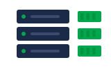
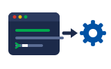
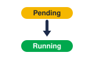
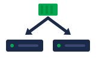
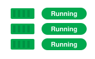
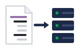

01Cluster parts · ផ្នែកនៃ clusterbrain
The control plane is the brain of the cluster.
Control plane គឺជាខួរក្បាលរបស់ cluster។
Pod និង kubectl · ផ្នែកនៃ cluster និងរបៀបនិយាយជាមួយវា
Cluster មានខួរក្បាល (control plane) និងកម្មករ (worker node)។ យើងប្រើ kubectl ដើម្បីបញ្ជាវា។

Worker nodesកម្មករ
kubectlឧបករណ៍បញ្ជា
StatusPending → Runningតាមលំដាប់៖ ផ្នែកនៃ cluster → kubectl → pod ចាប់ផ្តើម → រកបញ្ហា។
Space listen · ← → move · K show text
The control plane is the brain of the cluster.
Control plane គឺជាខួរក្បាលរបស់ cluster។
Worker nodes do the real work. They run the pods.
Worker node ធ្វើការងារពិតប្រាកដ។ វាដំណើរការ pod។

The scheduler decides which node runs each pod.
Scheduler សម្រេចថា node មួយណាដំណើរការ pod នីមួយៗ។
We talk to the cluster with a tool called kubectl.
យើងនិយាយជាមួយ cluster ដោយប្រើឧបករណ៍មួយឈ្មោះ kubectl។

kubectl get pods shows every pod and its status.
kubectl get pods បង្ហាញ pod ទាំងអស់ និងស្ថានភាពរបស់វា។

kubectl apply sends our YAML file to the cluster.
kubectl apply បញ្ជូនឯកសារ YAML របស់យើងទៅ cluster។
A new pod starts as Pending, then becomes Running.
Pod ថ្មីចាប់ផ្តើមជា Pending បន្ទាប់មកក្លាយជា Running។
kubectl describe pod tells us why a pod is stuck.
kubectl describe pod ប្រាប់យើងថា ហេតុអ្វី pod ជាប់គាំង។
kubectl logs shows what the app printed.
kubectl logs បង្ហាញអ្វីដែលកម្មវិធីបាន print ចេញ។
Usually no. Let a deployment create them, so they come back if they die.
ជាធម្មតា មិនគួរទេ។ ឲ្យ deployment បង្កើតវា ដើម្បីឲ្យវាត្រឡប់មកវិញ ពេលវាស្លាប់។
Pod ដែលបង្កើតដោយផ្ទាល់ នឹងមិនត្រឡប់មកវិញទេ ពេលវាស្លាប់។
The container keeps crashing, and Kubernetes waits longer before each restart.
កុងតឺន័រគាំងម្តងហើយម្តងទៀត ហើយ Kubernetes រង់ចាំយូរជាងមុន មុនពេល restart ម្តងៗ។
មើល logs ជាមុនសិន ដើម្បីរកមូលហេតុ។
Three worker nodes and one control plane.확인 필요 · checkcheck
Worker node បី និង control plane មួយ។
No node has enough CPU or memory for it.
គ្មាន node ណាមួយមាន CPU ឬ memory គ្រប់គ្រាន់សម្រាប់វាទេ។
Use kubectl exec to open a shell inside it.
ប្រើ kubectl exec ដើម្បីបើក shell នៅខាងក្នុងវា។
Tap a word's play button to hear it. Hide one side, then recall it before you tap to check.
The control plane is the brain of the cluster. Worker nodes do the real work. They run the pods. The scheduler decides which node runs each pod.
Control plane គឺជាខួរក្បាលរបស់ cluster។ Worker node ធ្វើការងារពិតប្រាកដ។ វាដំណើរការ pod។ Scheduler សម្រេចថា node មួយណាដំណើរការ pod នីមួយៗ។
We talk to the cluster with a tool called kubectl. kubectl get pods shows every pod and its status. kubectl apply sends our YAML file to the cluster.
យើងនិយាយជាមួយ cluster ដោយប្រើឧបករណ៍មួយឈ្មោះ kubectl។ kubectl get pods បង្ហាញ pod ទាំងអស់ និងស្ថានភាពរបស់វា។ kubectl apply បញ្ជូនឯកសារ YAML របស់យើងទៅ cluster។
A new pod starts as Pending, then becomes Running.
Pod ថ្មីចាប់ផ្តើមជា Pending បន្ទាប់មកក្លាយជា Running។
kubectl describe pod tells us why a pod is stuck. kubectl logs shows what the app printed.
kubectl describe pod ប្រាប់យើងថា ហេតុអ្វី pod ជាប់គាំង។ kubectl logs បង្ហាញអ្វីដែលកម្មវិធីបាន print ចេញ។
Q. Should I create pods directly?
Q. គួរបង្កើត pod ដោយផ្ទាល់ទេ?
A. Usually no. Let a deployment create them, so they come back if they die.
A. ជាធម្មតា មិនគួរទេ។ ឲ្យ deployment បង្កើតវា ដើម្បីឲ្យវាត្រឡប់មកវិញ ពេលវាស្លាប់។
Q. What does CrashLoopBackOff mean?
Q. CrashLoopBackOff មានន័យថាអ្វី?
A. The container keeps crashing, and Kubernetes waits longer before each restart.
A. កុងតឺន័រគាំងម្តងហើយម្តងទៀត ហើយ Kubernetes រង់ចាំយូរជាងមុន មុនពេល restart ម្តងៗ។
Q. How many nodes does our cluster have?
Q. Cluster របស់យើងមាន node ប៉ុន្មាន?
A. Three worker nodes and one control plane.
A. Worker node បី និង control plane មួយ។
Q. Why is my pod Pending?
Q. ហេតុអ្វី pod របស់ខ្ញុំនៅតែ Pending?
A. No node has enough CPU or memory for it.
A. គ្មាន node ណាមួយមាន CPU ឬ memory គ្រប់គ្រាន់សម្រាប់វាទេ។
Q. How do I get into a running pod?
Q. តើខ្ញុំចូលទៅក្នុង pod ដែលកំពុងដំណើរការយ៉ាងដូចម្តេច?
A. Use kubectl exec to open a shell inside it.
A. ប្រើ kubectl exec ដើម្បីបើក shell នៅខាងក្នុងវា។
Could you share your screen?
អាចចែករំលែកអេក្រង់បានទេ?
Which namespace is it in?
វានៅក្នុង namespace មួយណា?
Say it in your head first, then tap the box to check.